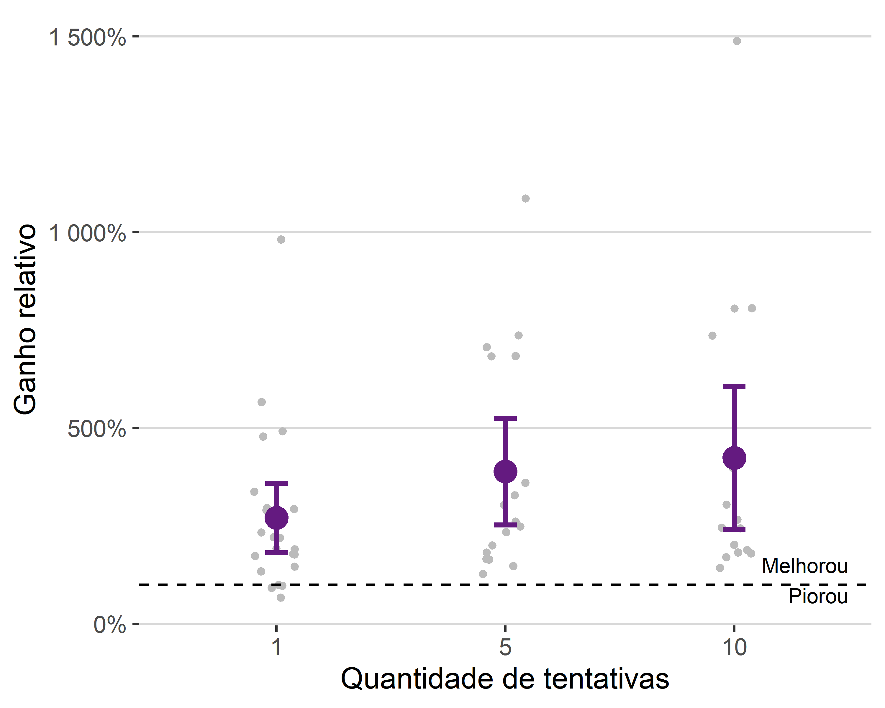
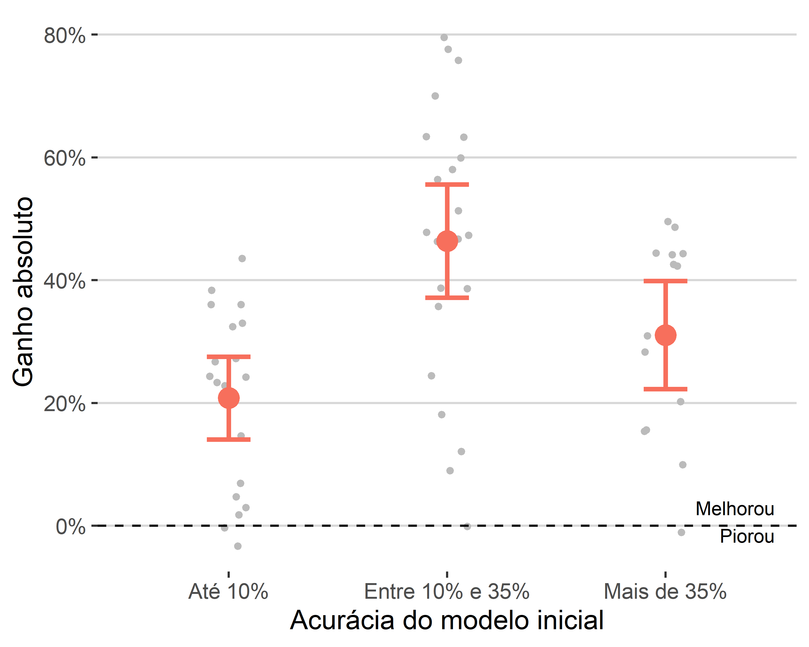
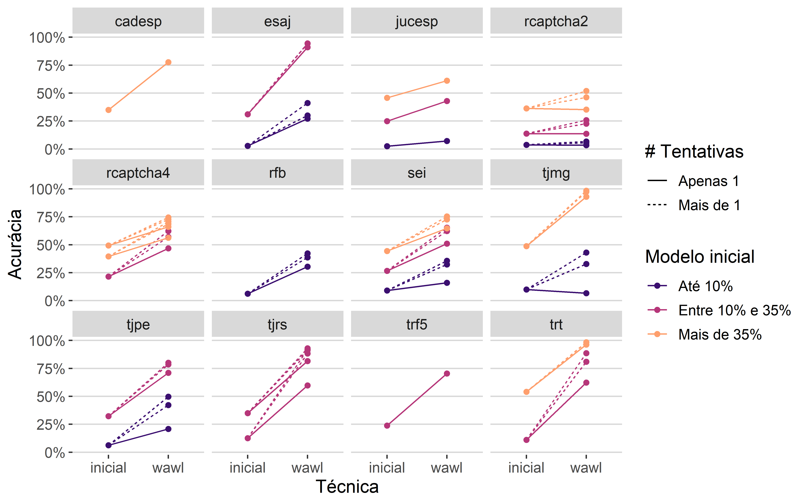

3 Resultados
I’m not a robot, I’m a human. But I’m pretty sure the robot is better at this than I am.
– ChatGPT
Neste capítulo, discute-se os resultados da metodologia WAWL. Para isso, são apresentadas resultados empíricos que demostram que os a proposta possui bons resultados.
Os resultados foram obtidos a partir das simulações com diversos Captchas. Foram realizadas 65 simulações no total, variando no tipo de Captcha, a acurácia do modelo inicial e a quantidade de tentativas no oráculo.
Para realizar os cálculos, montou-se uma base de dados com os resultados das simulações. A base está disponível publicamente no repositório da tese e contém informações do Captcha ajustado (captcha), da quantidade de observações do modelo inicial (n), da quantidade de tentativas do oráculo (ntry), da etapa de simulação (fase, inicial ou WAWL), do caminho do modelo ajustado (model) e da acurácia obtida (acc).
Os resultados gerais mostram um ganho de 333% na acurácia após a aplicação da metodologia WAWL. Ou seja, em média, a acurácia do modelo no terceiro passo da simulação (ver Seção 2.4.3) foi de mais de três vezes a acurácia do modelo inicial. Em termos absolutos (diferença entre as acurácias), o ganho foi de 33%, ou seja, após o terceiro passo modelos ganharam, em média, 33% de acurácia.
As Figuras 3.1 e 3.2 mostram os ganhos relativos e absolutos, separando os resultados gerais por quantidade de tentativas. Cada ponto é o resultado de uma simulação e o ponto em destaque é o valor médio, acompanhado de intervalo \(m \mp 2*s/\sqrt(n)\), com \(m\) sendo a média, \(s\) o desvio padrão e \(n\) a quantidade de dados. A linha pontilhada indica se a acurácia aumentou ou diminuiu após a aplicação da técnica.
Na Figura 3.1, é possível notar que os ganhos em acurácia apresentam alta variabilidade, mas que apresentam uma tendência positiva com relação ao número de tentativas. O ganho entre aplicar 5 e 10 tentativas é menos expressivo do que o ganho entre aplicar 1 e 5 tentativas, indicando que a oportunidade oferecida por sites que aceitam vários chutes é relevante e que não há necessidade de realizar tantos chutes para aproveitar essa oportunidade.

A Figura Figura 3.2, com as os ganhos absolutos, mostra a mesma informação mas em quantidades mais fáceis de interpretar. O ganho médio absoluto em sites que permitem mais de um chute ficou em torno de 40%, enquanto que o ganho com apenas um chute ficou um pouco acima de 25%. Importante notar também que o uso do oráculo só piorou a acurácia do model em casos que com apenas um chute, mostrando que a técnica é efetiva de forma consistente.

As Figuras 3.3 e 3.4 apresentam os resultados gerais separando por acurácia inicial do modelo. A estrutura do gráfico é similar às visualizações anteriores, que separaram os resultados por quantidade de tentativas. As categorias escolhidas foram: até 10%, mais de 10% até 35% e mais de 35% de acurácia no modelo inicial. A escolha dos intervalos se deram pela quantidade de observações em cada categoria.
A Figura 3.3 mostra os ganhos relativos. É possível notar uma tendência de queda no ganho de acurácia com uso do oráculo conforme aumenta a acurácia do modelo inicial. Esse resultado é esperado, pois, como a acurácia é um número entre zero e um, um modelo que já possui alta acurácia não tem a possibilidade de aumentar muito de forma absoluta.
A Figura 3.4 mostra os ganhos absolutos. O gráfico apresenta o mesmo problema que o anterior, já que o ganho máximo depende da acurácia inicial do modelo. Ainda assim, é possível notar que, em termos absolutos, modelos com acurácia inicial entre 10% e 35% apresentaram um ganho maior que modelos com acurácia inicial de até 10%.

Para lidar com o fato da acurácia ser um número limitado, fizemos o mesmo gráficos de antes, mas ajustado pelo máximo possível que a técnica do oráculo poderia proporcionar. O ganho absoluto ajustado de uma simulação é dado por
\[ \text{ganho} = \frac{\text{oráculo } - \text{ inicial}}{1\; - \text{ inicial}}. \] A Figura 3.5 mostra os ganhos ajustados. Pelo gráfico, é possível notar que existe um ganho expressivo da técnica WAWL do oráculo para modelos iniciais com mais de 10% de acurácia com relação a modelos iniciais com até 10% de acurácia. Ou seja, quando o modelo inicial é fraco, o ganho ao usar a técnica é menor. É importante notar, no entanto, que as simulações mostram a aplicação da técnica apenas uma vez – é possível baixar mais dados e atualizar o modelo indefinidamente. O menor efeito da técnica para modelos iniciais fracos não significa, portanto, que a técnica não funciona para modelos iniciais fracos; pelo contrário: ela ajuda o modelo a sair do estado inicial e o leva para um estado com acurácia maior, de onde seria possível aplicar a técnica novamente para obter resultads mais expressivos.
Na Figura 3.6, são apresentados os resultados separando por Captcha. Cada linha é uma combinação de Captcha, quantidade de tentativas e acurácia modelo inicial, classificados nas três categorias mostradas anteriormente. As linhas pontilhadas indicam modelos ajustados com mais de uma tentativa, enquanto as linhas contínuas mostram modelos ajustados com apenas uma tentativa. A primeira extremidade de cada linha, do lado esquerdo, indica a acurácia do modelo inicial e a segunda extremidade, do lado direito, a acurácia do modelo usando o método WAWL.

Pelo gráfico, é possível identificar duas informações relevantes. Como já verificado anteriormente, os modelos ajustados com mais de uma tentativa apresentam maiores ganhos do que os modelos ajustados com apenas uma tentativa. Verifica-se também que modelos com acurácia inicial de até 10% só apresentam ganhos menores que os modelos com acurácia inicial maior que 10% nos casos em que apenas uma tentativa é definda. Ou seja, existe interação entre a quantidade de tentativas e a acurácia do modelo inicial ao avaliar o impacto nos ganhos empíricos do método WAWL.
Pelos resultados das simulações, é possível concluir que o método WAWL foi bem sucedido. Primeiro, o método apresenta resultados expressivos e de forma consistente, sem realizar novas anotações manuais. Além disso, a técnica aproveita a oportunidade oferecida pelos sites de obter o feedback oráculo múltiplas vezes na mesma imagem. Finalmente, o método apresenta, em média, resultados positivos mesmo para modelos iniciais muito fracos (com acurácia de até 10%), indicando que sua aplicação é possível para qualquer modelo inicial, o que é bastante factível de atingir com bases pequenas ou com modelos generalistas para resolver Captchas.
Um possível problema em aplicar o WAWL é que a técnica poderia introduzir viés de seleção no modelo, impedindo-o de ser aprimorado indefinidamente. Mesmo que os resultados teóricos dêem uma boa base para acreditar que isso não seja verdade, foi feito um experimento adicional, com apenas um dos Captchas, para verificar se a aplicação da técnica múltiplas vezes apresenta bons resultados.
O Captcha escolhido para a simulação foi o trf5, por ser um Captcha que não aceita múltiplos chutes, em uma tentativa de obter um pior caso. Para esse Captcha, o melhor modelo obtido com a técnica do oráculo foi considerado como modelo inicial, sendo usado para baixar novos dados do site do Tribunal. Os novos dados foram adicionados à base de treino, ajustando-se um novo modelo.
A Figura 3.7 mostra os resultados da aplicação iterada. A utilização da técnica não só funcionou como levou o modelo a uma acurácia de 100%.

O resultado sugere que a técnica pode ser utilizada em várias iterações para auxiliar no aprendizado do modelo. Ela sugere, ainda, que uma técnica de aprendizado ativo com feedback automático do oráculo pode dar bons resultados, já que a forma de obter os dados não introduz viés de seleção no ajuste do modelo.
Discussão
Os resultados apresentados nas seções anteriores mostram que o método WAWL possui boas propriedades matemáticas e bons resultados empíricos. Nesta seção, os resultados foram confrontados com as hipóteses de pesquisa definidos na Seção 1.6 de forma crítica.
A primeira hipótese de pesquisa diz respeito à pertinência de utilizar do aprendizado fracamente supervisionado como forma de ajustar modelos para resolver Captchas. A hipótese foi verificada, tanto do ponto de vista teórico quanto do ponto de vista prático.
Na parte teórica, várias pesquisas já apontam que o aprendizado com rótulos parciais ou rótulos complementares têm boas propriedades. Por isso, já seria esperado que uma nova função de perda, desde que pensada com cuidado, traria resultados positivos. O resultado foi verificado a partir da obtenção das propriedades da função de perda proposta, mostrando que a função de risco baseada nessa perda se aproxima da função de risco de um problema completamente supervisionado.
Na parte prática, até o momento não existiam evidências de que a utilização de rótulos parciais ou rótulos complementares teriam bons resultados empíricos em Captchas. Isso foi verificado em todos os 12 Captchas estudados, sendo 10 obtidos do mundo real. Em todos os casos, a função de perda proposta funcionou bem e trouxe ganhos significativos na acurácia do modelo, tanto em termos relativos quanto absolutos. Isso demonstra que a escolha do método se alia bem ao problema que deu origem à pesquisa, que são os Captchas.
Sobre a parte de aplicação iterada do WAWL, cabe um comentário. O resultado encontrado, com 100% de acurácia, pode sugerir que o método WAWL sempre chegará em um resultado de 100% para qualquer Captcha que surgir. No entanto, pode ser que exista uma limitação na capacidade do modelo, que é habilidade do modelo para se ajustar aos dados a partir dos parâmetros. Pode ser que a arquitetura de rede neural escolhida para resolver o Captcha não seja capaz de chegar a um modelo com 100% de acurácia, independente da quantidade de imagens observadas. É importante olhar o resultado apresentado de forma crítica e compreender que os resultados finais podem ser limitados, já que a arquitetura da rede neural não é parte do método WAWL.
A segunda hipótese de pesquisa é a possibilidade de aliar a área de raspagem de dados com a área de modelagem estatística. Essa parte está bem mais relacionada com a parte prática da pesquisa, já que os conceitos de raspagem de dados não são utilizados para estudar a propriedade dos modelos. A hipótese também foi verificada, já que o método WAWL, que utiliza técnicas de raspagem de dados, apresentou bons resultados empíricos.
Neste momento, cabe um comentário sobre o ineditismo da ponte entre raspagem de dados e estatística. É verdade que existem muitas pesquisas que são possibilitadas por conta dos dados obtidos via raspagem de dados: as pesquisas da ABJ, mencionadas na Seção 1.1 são alguns exemplos. Também existem soluções que utilizam dados provenientes de raspagem de dados para construção de modelos: por exemplo, o DALL-E-2, que é parte de uma base de dados construída utilizando imagens baixadas da internet (MURRAY; MARCHESOTTI; PERRONNIN, 2012; RAMESH et al., [s.d.]). No entanto, até o momento da realização da pesquisa, não foi encontrado nenhum trabalho que utiliza a raspagem de dados como parte do processo de aprendizado estatístico. O método WAWL conecta as áreas de forma intrínseca, podendo ser entendida como uma nova variação de aumentação de dados aplicada a redes neurais convolucionais.
O fato da raspagem de dados ser relevante para o ajuste de um modelo estatístico pode levar a algumas discussões sobre o ensino da estatística. Primeiro, é importante mencionar que:
- Raspagem de dados não faz parte dos currículos de Bacharelado em Estatística das principais universidades do país1. Logo, pode-se argumentar que raspagem de dados não é uma área de interesse da estatística.
- Raspagem de dados não é uma área de conhecimento bem definida, como álgebra ou análise de sobrevivência. A área é melhor desenvolvida através de aplicações práticas e utilização de ferramentas (como R ou python) do que através de aulas teóricas.
Os resultados levam, então, a um problema de balanceamento entre pertinência e oportunidade. De um lado, a área de raspagem não se encaixa muito bem no currículo de estatística. Por outro lado, a área expande as possibilidades de atuação de uma profissional da estatística.
Para aliar a pertinência e a oportunidade, uma opção seria oferecer disciplinas optativas de raspagem de dados nos cursos de estatística. Para aumentar a quantidade de potenciais ministrantes, a disciplina poderia ser oferecida em parceria com outros cursos, como ciência da computação, matemática aplicada e engenharias. Dessa forma, as pessoas interessadas teriam a oportunidade de aprender um pouco sobre as técnicas principais, conectando a raspagem de dados com as áreas de conhecimento específicas, como é o caso do Captcha, que alia raspagem de dados com estatística e inteligência artificial.
No final, as duas hipóteses de pesquisa foram verificadas. No processo de obtenção dos resultados, no entanto, um terceiro avanço muito importante foi realizado na parte computacional. O pacote {captcha} e os pacotes auxiliares {captchaDownload} e {captchaOracle} são frutos desse trabalho. Pela primeira vez, foi construída uma ferramenta aberta contendo um fluxo de trabalho adaptado para trabalhar com Captchas. Além disso, trata-se de uma das primeiras aplicações completas dos pacotes {torch} e {luz}, que têm potencial de revolucionar a forma em que os modelos estatísticos são desenvolvidos por pessoas que fazem pesquisa em estatística. Os pacotes foram descritos em detalhes no sec-pacote.
Por fim, todos os modelos construídos foram disponibilizados no pacote {captcha}. Os códigos, dados e resultados das simulações estão disponíveis no pacote {captchaOracle}. Os dados utilizados para elaboraçõ da tese estão disponíveis no repositório da tese no GitHub. Dessa forma, a pesquisa pode ser considerada como reprodutível, podendo servir como base para pesquisas futuras.
Universidades consultadas: USP Butantã (IME), UFSCar, UNESP, Unicamp, USP São Carlos (ICMC), UFBA, UFPR, UFRGS, UFPE, UFAM, UFRN, UFF, ENCE, UFRJ, UFMG, UnB e UFG.↩︎